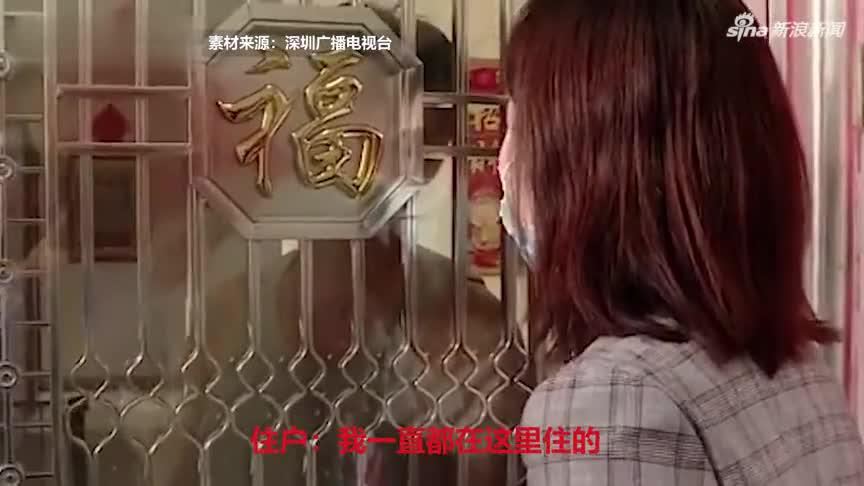

再说一次，有人黑我不用告诉我。我一点都不关心。谁再来说只能拉黑你。我不想精神衰弱最后抑郁症，压力已经不小了。再跟某些大v以及你们群里那些人说一声，这轮做完我就消失，给你们让路，能不能别这么心急？就这么几个买基金的人值得你这么眼红吗？
我总是不停的重复做一个梦，买过一辆奔驰放在一个修理厂，忘了去取。但是醒了想想好像没有这回事，然后就不停的做同样梦…@新浪视频:【女子#时隔28年突然想起买了套房# 已被别人入住】深圳女子在1992年以33万元买下140多平的房子，28年后突然想起还有套房，去找时发现有陌生人住进去，小区居民称其是撬锁搬进去。@掌闻视讯 女子时隔28年突然想起买了套房 家人赶来一看当场愣住  459万次播放 00:55
确实不懂。很多人骂华为对员工不好，问题是怎么看不到太多华为员工自己出来骂，相反很多人拼命往里面挤。现在中国的阶段，很多人想舒舒服服赶超对手是不是想太多了？我不用华为是因为产品不是我的菜以及不喜欢大嘴领导，但内心是真心希望华为好。---:抱歉，作者已设置仅展示半年内微博，此微博已不可见。